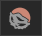

CC/iC ‘Create’ Tools
Since version 1.4.3, the CC/iC Blender Tools add-on has been split up into 2 tabs:
The ‘Pipeline’ tab which handles import/export, material parameters and rigging/animation.
The ‘Create’ tab which handles object management, physics and sculpting/texturing.

The CC/iC Create tab has an initially opened section with common tools to quickly export the character (only for the CC-Blender round trip) and to adjust the current lighting preset.
It also contains foldout sections for:
Adding Objects to Characters
The example discussed here uses a simple Blender created model of a gold ring with a BSDF shader and shows how to properly add it to a Character Creator character. This character + added item can then either be returned to Character Creator, used in Blender or sent onwards to Unity (depending on which workflow you are using).
A simple mesh made in Blender. (note: the object origin is kept as the world origin) |
A Principled BSDF shader made with Blender’s shader node editor. |
‘Create’ Object General Workflow
Firstly create the item you wish to add to your character. You may do this in a separately stored .blend file and append it to your working character when needed, or model it directly onto the imported character.
For this example the origin of the model item is kept at the world origin (0,0,0), and the material for the model uses a node based BSDF shader (with only an Image Texture node as the input for the base color - for simplicity).
Export According To Pipeline
If you wish to add the item to the character and then return it to Character Creator, the please export from CC using the Blender Round Trip Workflow.
If you intend solely to use the character and added item in Blender, then use the basic Export Settings From Character Creator or iClone.
If you wish to have a character that is editable (and indeed re-editable) in Blender which will ultimately be destined for Unity, then follow the directions in the Unity Round Trip Workflow.
Tip
Potentially the best course of action is to use the Blender Round Trip Workflow and return the character to Character Creator.
This will allow you to save the new item to your Character Creator library and re-use it on other characters (discussed below).
Export of character + new library item can then be made for whichever pipeline you subsequently want to use.
Import Character and Position Accessory
Import your character with a Standard Import.
Add your new object (either create it directly or append it from a library file).
Position the object (in Edit mode) according to your needs (this example requires a ring to be on a finger).

New model positioned appropriately on the character.
Adding the Object to the Character
Select the object in Object mode
In the CC/iC Create tab, open ‘Object Management’ and click on ‘Add To Character’ in the ‘Objects & Materials’ section.

‘Add to Character’ will have a number of effects. Firstly, the object will be have the character armature set as it’s parent and an Armature modifier applied to the object. Secondly, the shader on the object’s material will be reconstructed and changed into a PBR shader suitable for use in Character Creator.
The outliner changes to reflect the hierarchy change (object parented to the character armature). |
A PBR shader is constructed to look identical, but be compatible with Character Creator. |
Add Weights to the Object
Re-select the object in Object mode.
Using the ‘Armature & Weights’ tools in the CC/iC Create tab: Set the armature to ‘Rest Position’ as shown.

Click ‘Transfer Weights’ to ‘weight paint’ the object with appropriate bone influences.
The images below show a ‘before and after’ the weight transfer to show what happens.
Before: (Weight Paint mode view and Object data - Vertex Groups)
|
|
No weights are set. |
No vertex groups are present |

After: (Weight Paint mode view and Object data - Vertex Groups)
Weights are ‘painted’ for each vertex group according to bone proximity. |
A full set of vertex groups have been added (only relevant ones have weights painted). |
The weights are transferred by proximity and as such will have several bone influences, this is best suited to clothing items which are intended to conform to the character pose.
Should you wish to have only a single bone influence then there are two options:
You can leave the weigh panting as it is and export the character + added item back to CC. In CC you can then convert the item to a ‘Non Conformable Accessory’ which will automatically repaint it with a single bone influence and parent it a bone in the character (discussed further below).
Or you can manually repaint the item with only that bone as influence, then after export back to CC or further use elsewhere, you can leave the item as a ‘Conformable Item’. So after removal of all unwanted vertex groups and 100% weight painting (in weight paint mode) the Weight Paint mode view and Object data - Vertex Groups pane should look similar to those shown below.
Manual Weight Paint for Single Bone:
|
|
100% weight paint for a single bone. |
Only one bone has been allowed influence. |

Export/Actions According to Pipeline
For use only in Blender: If you are only using the added object in Blender then since it is positioned and weighted, it will obey the pose of the character and is now ready for use.
For further Export to Unity: In the case of further export to Unity, again the positioning and weight painting mean that it can be safely exported to Unity as described in the Unity Round Trip Workflow.
For return to Character Creator: To return the character to Character Creator follow the procedure described in the Round Trip Detailed Workflow section of the documentation: using the ‘Export to CC3/4’ function.

This export can be re-imported using the ‘Plugins -> Blender Pipeline -> Import Character From Blender’. The Asset Import Status Report will contain the added model item.
Once the import has completed, the added object will be visible on the character (please note you’ll need to manually re-hide any penetrating meshes - see the Hiding Meshes in CC4 documentation for more information).
|
|
The character returns normally (NB: Blender Round Trip loses the hidden face data) with the object attached. |
The object correctly conforms to the pose of the character. |

Within Character Creator you now the opportunity to save the new item to your Character Creator library.
In the case of a ‘Conformable Item’ - one that deforms with the character pose (e.g. a clothing item), then it can be saved directly to your custom library. (see the section below on Saving to the Custom Library for more details).
In the case of a ‘Non-Conformable Item’ - one that is never deformed, but only moves according to the movements of a parent bone (e.g. a static inflexible object such as a brooch or glasses), then it can be converted to a ‘Non Conformable Accessory’ (see the section below on Converting to a Non-Conformable Accessory for more details) and then saved to the custom library (see: Saving to the Custom Library).
Converting to a Non-Conformable Accessory
Select the object in the Scene window object list.
In the Attribute tab of the Modify window use the ‘Convert to Accessory’ tool.

In the ‘Convert to Accessory’ dialog box, select ‘Bake Current Shape’ then click convert.

The object will now appear in the Scene window object list with the accessory icon next to it.

When saving the accessory to the custom library it will be considered as an ‘Accessory Asset Type’ and can only be stored beneath the accessories folder; see below for details.
Saving to the Custom Library
New or customized objects can be saved to Character Creator’s Custom Library as follows:
Select the object in the Scene window object list.
Navigate to the Content window and select the Custom tab. You may freely create a new subfolder (NB: ‘Conformable Items’ are considered to belong to the ‘Cloth’ group and must be saved somewhere under the Cloth folder. ‘Non Conformable’ accessories must be saved under the Accessories folder.)

Click Save and give the object a ‘File Name’ and an ‘Asset Type’ (save location)
The object will be added to the custom library as the above Asset Type, using the current scene camera view as the object icon.
New Item Saved to Cloth/Others
Adding and Editing Physics
Importing with Physics

When the Physics option is selected in the Import/Export panel then when the character is imported, cloth physics, vertex groups and modifiers will be automatically generated for any of the mesh objects & materials that have PhysX weight maps. All of which can be changed at will should you need to.
Thus, to import a character with physics enabled (highlighted blue), in the Import/Export panel follow the procedure for Standard Import (do not use the standard fbx importer for this).
Important Consideration For Cloth Simulation
Always allow Blender to compute the full range of frames for any cloth simulation by playing the whole animation through with no Frame Dropping.
This will be initially slow; however this must be done in order to cache the cloth calculations.
Once this is done you may then spool through the animation or enable Frame Dropping to get closer to real time playback (as much as Blender allows before requiring a re-calculation).
Failure to do this will cause the cloth simulation to break and behave erratically.
Settings
The Physics Settings panel contains a comprehensive set of controls to adjust the physics parameters of the currently selected object.

Create/Remove
Add/Remove Cloth Physics: This will add or remove a Cloth Physics modifier on the selected object. This enables/disables full cloth simulation.
Add/Remove Collision Physics: This will add or remove a Collision Physics modifier on the selected object. Which will allow cloth objects to collide with mesh objects.
Mesh Correction
Fix Degenerate Mesh: This will remove degenerate mesh elements from the mesh - this include loose vertices, orphaned edges, zero length edges etc. The presence of these elements may cause problems with simulation.
Separate Physics Materials: This will separate the object by material and apply physics to the separated objects that have weight maps. This may increase performance where only a small part of an object is simulated.
Presets
This will impose physics settings on the object that approximate the behavior of the named material (Cotton, Silk etc).
Cloth Settings are a convenient access point to the standard Blender cloth physics settings (by default seen in the Physics Properties of the standard Properties pane). These are only shown when an object (e.g. a clothing item) has had ‘Cloth Physics’ applied to it and is selected.
Collision Settings are the standard blender collision settings (by default seen in the Physics Properties of the standard Properties pane). These are only shown when an object has had ‘Collision Physics’ applied to it and is selected. This is generally applicable to the character’s body since Blender uses the character mesh as a collider for physics simulation.
The example below shows a standard ‘Silk’ preset applied to a dress object during an animation (mesh highlighted for clarity).

Standard Silk Simulation
Hair Physics
Whilst early versions of hair from Character Creator have properly defined physics properties, certain newer ones may not simulate correctly. Smart Hair should now simulate correctly (as of version 1.3.6).
Workflow: Adding Object Physics
This workflow discussion is specifically aimed at adding physics properties that are suitable for return to Character Creator or for further use in Unity. For the purpose of only adding physics for use in Blender then please consult the official Blender Physics documentation for details.
Export According To Pipeline
As with the Adding Objects to Characters workflow, it is imperative that the character you wish to work with is exported from Character Creator with the appropriate settings for the pipeline being used.
If you wish to add a physics enabled item and then return the character to Character Creator, the please export from CC using the Blender Round Trip Workflow.
If you intend solely to use the character and physics enabled item in Blender, then use the basic Export Settings From Character Creator or iClone.
If you wish to have a character that is editable (and indeed re-editable) in Blender which will ultimately be destined for Unity, then follow the directions in the Unity Round Trip Workflow.
Import Character
The correctly exported character should be imported into Blender with a Standard Import (physics will be deliberately added in a later step).
The item to which physics is to be added can either be part of the export from Character Creator or can be created directly or appended from a library file (if you are adding a new item then please follow the instructions in Adding Objects to Characters to correctly incorporate it).
Open the CC/iC Create tab.
In the ‘Character Physics’ section, click on ‘Apply All Physics’. This will enable physics on all the applicable items (colliders for the character body, and cloth for any items that have physics enabled in Character Creator).

In Object Mode select the item to have physics added to it; in the ‘Create/Remove’ section click on ‘Add Cloth Physics’. This will enable cloth physics for the selected item and add a modifier which uses a weight map texture to control allowed cloth deformation. Presets for several cloth types are also made available which will control the response of the cloth to cloth simulation.

After Cloth Physics is added, a suitable weight map must be painted onto the object which will control how much the object is permitted to be deformed by cloth physics simulation.
Workflow: Physics Weight Mapping
Cloth simulation in Character Creator/iClone is controlled not only by the cloth parameters, but also by a monochrome texture or “weight map” which is used to determine the extent to which the cloth is permitted to be moved by the physics simulation (this weight map like all textures uses the model’s UV coordinates).
Character Creator Item With Physics Weight Map
This Blender add-on allows this weight map to be painted directly onto the item model using Blender’s own texture painting tools allowing fine control.

Blender Physics Weight Map Painted on Above Item
Note
The weight map is monochrome (black and white) and as such uses black to mean that part of the model will not move and white to mean that part of the model can move freely. The grey scale in-between will permit an increasing amount of movement.

To begin weight map painting, in the ‘Weight Maps’ section click on ‘Paint weight Map’. This will change Blender into Texture Paint mode, whereupon the Blender texture paint tools may be used (see the documentation on Blender Texture Painting for further details).
Should you require a different size of weight map (larger or smaller) then (prior to starting the painting) select the desired size of map from the dropdown list and then click ‘Resize Weightmap’.
Tip
You can use the Gradient Fill Mode to easily paint a smooth predictable gradient onto the model.
When weight painting select the Fill Tool on the Left hand side tool strip. 
Then in the Right hand tool bar select the Tool tab and in the Color Picker switch from Color to Gradient
Set up the gradient as you see fit. Then on the model position the pointer where you wish the gradient to begin, press CTRL then press LMB move the pointer to wherever you wish the gradient to end (a solid line will be shown) and release the LMB to impose the gradient along the line.
Once weight painting is complete, then click on ‘Done Weight Painting’

If you are satisfied with the weight painting then click ‘Save’ to store the weight map.
Warning
Weight painting physics requires some subtlety, where too much freedom will result in a disastrous simulation in Character Creator and too little will not allow anything visible to happen.
Several attempts will probably be needed before the results are acceptable.
The images below are the actual results of a weight painting. The weight painted model (left) only has a small area able to move freely, this is reflected in the Blender cloth simulation (center). NB: The Blender simulation is somewhat different to Character Creator’s and as such should only be used a a guide (grey areas are far more restricted in Blender). Finally the Character Creator result (right) shows a visible range of motion in accordance with the grey-white painted areas of the weight map.
|
|
|
Weight painted model in Blender |
Wind simulation in Blender |
Idle movement simulation in Character Creator |


Workflow: Exporting According to Pipeline
Return to Character Creator: To return the character to Character Creator follow the procedure described in the Round Trip Detailed Workflow section of the documentation: using the ‘Export to CC3/4’ function (Either in the Import/Export section of the CC/iC Pipeline Tab or the Quick Export section of the CC/iC Create Tab).
This export can be re-imported using the ‘Plugins -> Blender Pipeline -> Import Character From Blender’. The physics will be automatically activated on the newly enabled working object and the physics weight map will be automatically applied along with any parameter settings made in Blender.

Newly Physics Enabled Item Returned to Character Creator
This item is now ready for use.
Export to Unity: In the case of further export to Unity, again the positioning and weight painting mean that it can be safely exported to Unity as described in the Unity Round Trip Workflow.
Tip
It is of immense benefit to export the model to Unity as a Blend file and to export the model directly into the Unity project (in a folder under /Assets in the Unity project folder structure).
This allows rapid editing of the physics data (and indeed any other aspect of the model):
Double-click on the blend file from within the Unity project to begin editing.
Return to Unity with the ‘Update Unity Project’ function (see Unity Round Trip Workflow).
Rebuild the cloth physics with the Unity addon.
Once processed in Unity with the ‘Cloth Physics’ feature enabled (see the Unity Cloth Physics documentation) then the physics item will be appropriately constraint painted and have the correct colliders associated with it.

Unity Constraint Painted In Line With The Blender Weight Map
Actions to Aid Cloth Simulation
Sometimes, cloth simulations do not behave as expected. This can be for a number of reasons which include:
Improper cloth parameters.
Improper weight Mapping.
Mesh errors.
Mesh distortion.
The cloth parameters and weight mapping have been discussed above and are principally responsible for how the cloth performs (too much/too little freedom and flexibility etc.) which can be adjusted easily to your needs.
Mesh problems can however cause cloth simulation to fail spectacularly.
Mesh degeneracy will often cause simulations to fail - examples of this include:
Zero length edges
Zero area faces
Orphaned/duplicated vertices
Blender has internal tools to help with these problems (see Blender’s Clean Up documentation).
A simple tool has also been provided to rapidly remove most offending items - in the ‘Mesh Correction’ section of the physics foldout, use the ‘Fix Degenerate Mesh’ tool to correct the above problems.

Mesh distortion, e.g. meshes that have been folded over themselves can also cause significant problems.
These can be readily corrected by use of the ‘Smooth’ tool in ‘Sculpt mode’.
Please note: the smooth tool should be used at very low strength (0.075 - 0.100) to avoid doing damage to the mesh.
 Smooth Tool
|
|
Folded, distorted mesh which will cause cloth simulation problems. |
Smoothed mesh to remove folded elements will allow better cloth simulation. |


{kind=link}
{kind=link}
{kind=link}
{kind=link}
{kind=link}
For more details please see Blender’s Sculpt Tools documentation.
Sculpting Normals
This is currently work in progress.
This section is an aid to allow the sculpting of extra detail into the normal map of the imported character.
It allows the sculpting of detail directly onto the character body/face/hands and then the ‘baking’ of that detail into a normal map.
This baked normal map can then be applied to the base character model in order to give the illusion of detail without altering the topology of the character model.
It should find use in enhancing the appearance of features such as scars or burns.